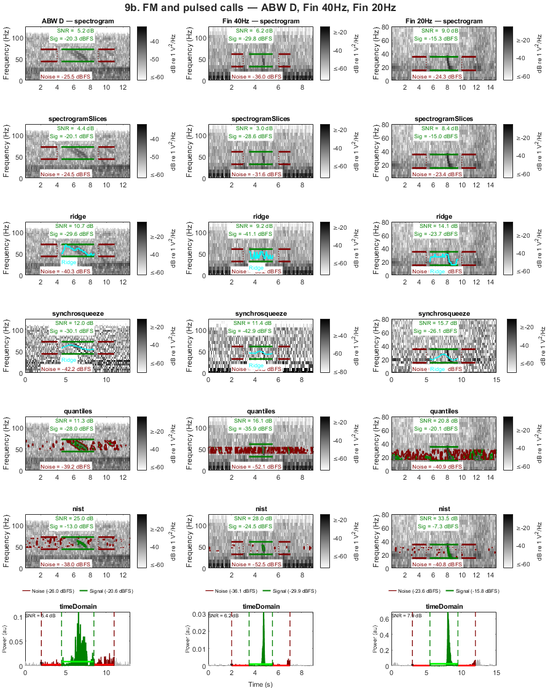
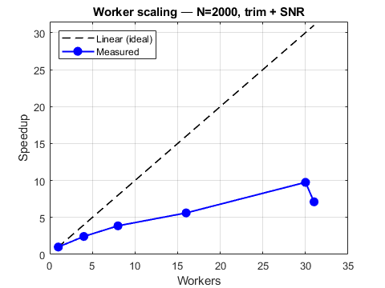

Parallel processing guide — Casey 2019 Common Ground ABZ calls
Demonstrates how to characterise a large dataset, measure parpool startup overhead, identify CPU vs I/O bottlenecks, and choose parallel settings before committing to a full batch run.
Uses the Casey 2019 Common Ground capture history (Miller et al., in press) as the worked example — adjudicated ABZ-call detections from three analyst observers and two automated detectors, across ~200 h of continuous recording. The five-observer × 10k-row workload (~50k annotation measurements) is large enough to make the parallel tradeoffs concrete and informative.
WHAT THIS GUIDE COVERS 1. Dataset characterisation 2. Pool startup cost — the tradeoff behind parallelThreshold 3. Serial baseline — time trim+SNR, extrapolate to full workload 4. Worker sweep + break-even N — measured parallel rate, lowest absolute wall time, CPU vs I/O diagnosis, speedup plot 5. Full batch — trim+SNR per observer + merged union
INTERPRETING THE SPEEDUP CURVE Near-linear speedup → CPU bound. More workers give proportional gains. Speedup plateaus below nWorkers → I/O bound. Disk throughput is the bottleneck. More workers will not help. Consider co-locating audio and compute on the same machine, or using an SSD.
The saved results CSV can be used for downstream analysis — see companion notes on SNR as a discriminator of true vs false positives (Miller et al., in preparation).
REFERENCE Miller, B.S. et al. (in press). Common ground: efficient, consistent, observer-independent bioacoustic call density estimation with adjudicated ground truth and capture-recapture detection functions. Methods in Ecology and Evolution.
DATA Capture history: included in examples/ (this script's directory) Recordings: Australian Antarctic Data Centre (submission pending) https://data.aad.gov.au/metadata/AAS_4102_longTermAcousticRecordings
Contents
User configuration
wavRoot = 'w:\annotatedLibrary\BAFAAL\Casey2019\wav'; captureHistoryFile = fullfile(fileparts(mfilename('fullpath')), ... 'MultiObserverCaptureHistory_Casey2019_Bm-Ant-ABZ-calls_analysts123sd_judgedBSM_simpleSnr.csv'); sampleSize = 500; % annotations for serial baseline (reliable extrapolation) sweepSize = 2000; % annotations for worker sweep (near break-even, ~67 per worker at 30)
SNR and trim parameters — fixed [25 29] Hz band for all observers
snrP = struct(); snrP.snrType = 'spectrogramSlices'; snrP.useLurton = false; snrP.noiseLocation = 'beforeAndAfter'; snrP.noiseDelay = 1; snrP.nfft = 1024; snrP.nOverlap = floor(1024 * 0.75); snrP.freq = [25 29]; snrP.showClips = false; trimP = {'freq', [25 29], 'nfft', 1024, 'showPlot', false}; obsNames = {'Analyst 1','Analyst 2','Analyst 3','Detector 4','Detector 5'}; obsKeys = {'obs1','obs2','obs3','obs4','obs5','merged'}; obsLabels = [obsNames, {'Merged'}]; %%%%%%%%%%%%%%%%%%%%%%%%%%%%%%%%%%%%%%%%%%%%%%%%%%%%%%%%%%%%%%%%%%%%%%%%%%%
1. Dataset characterisation
%%%%%%%%%%%%%%%%%%%%%%%%%%%%%%%%%%%%%%%%%%%%%%%%%%%%%%%%%%%%%%%%%%%%%%%%%%% fprintf('=== Parallel Processing Guide — Casey 2019 ABZ calls ===\n\n'); fprintf('--- 1. Dataset characterisation ---\n'); ch = readtable(captureHistoryFile, 'VariableNamingRule', 'preserve'); nRows = height(ch); fprintf(' Total rows (all observers): %d\n', nRows); fprintf(' Judged rows: %d (true: %d false: %d)\n', ... sum(logical(ch.judged)), ... sum(logical(ch.judged) & ch.verdict == 1), ... sum(logical(ch.judged) & ch.verdict == 0)); detCols = {'detect_observer1','detect_observer2','detect_observer3', ... 'detect_observer4','detect_observer5'}; for obs = 1:5 nDet = sum(logical(ch.(detCols{obs}))); fprintf(' Observer %d (%s): %d detections\n', obs, obsNames{obs}, nDet); end anyDet = any(ch{:, detCols} == 1, 2); fprintf(' Union (any observer): %d detections\n\n', sum(anyDet)); %%%%%%%%%%%%%%%%%%%%%%%%%%%%%%%%%%%%%%%%%%%%%%%%%%%%%%%%%%%%%%%%%%%%%%%%%%%
=== Parallel Processing Guide — Casey 2019 ABZ calls === --- 1. Dataset characterisation --- Total rows (all observers): 10312 Judged rows: 1289 (true: 681 false: 608) Observer 1 (Analyst 1): 3166 detections Observer 2 (Analyst 2): 7048 detections Observer 3 (Analyst 3): 9273 detections Observer 4 (Detector 4): 2289 detections Observer 5 (Detector 5): 3821 detections Union (any observer): 10312 detections
2. Pool startup cost
%%%%%%%%%%%%%%%%%%%%%%%%%%%%%%%%%%%%%%%%%%%%%%%%%%%%%%%%%%%%%%%%%%%%%%%%%%% fprintf('--- 2. Pool startup cost ---\n'); hasParallel = ~isempty(ver('parallel')); if ~hasParallel fprintf(' Parallel Computing Toolbox not available.\n\n'); tStartup = 0; maxWorkers = 1; else maxWorkers = max(1, feature('numcores') - 1); % leave one core free pool = gcp('nocreate'); if ~isempty(pool), evalc('delete(pool)'); end tPool = tic; evalc('parpool(''Processes'', maxWorkers)'); tStartup = toc(tPool); fprintf(' parpool startup (%d workers): %.1f s\n', maxWorkers, tStartup); fprintf(' This fixed overhead must be recovered by parallel speedup.\n\n'); end %%%%%%%%%%%%%%%%%%%%%%%%%%%%%%%%%%%%%%%%%%%%%%%%%%%%%%%%%%%%%%%%%%%%%%%%%%%
--- 2. Pool startup cost --- parpool startup (31 workers): 18.0 s This fixed overhead must be recovered by parallel speedup.
3. Serial baseline — trim + SNR on a small sample
%%%%%%%%%%%%%%%%%%%%%%%%%%%%%%%%%%%%%%%%%%%%%%%%%%%%%%%%%%%%%%%%%%%%%%%%%%% fprintf('--- 3. Serial baseline (N=%d, trim + SNR) ---\n', sampleSize); % Build observer 1 annotations mask1 = logical(ch.detect_observer1); annotObs1 = table(); annotObs1.soundFolder = repmat({wavRoot}, sum(mask1), 1); annotObs1.t0 = ch.t0_observer1(mask1); annotObs1.tEnd = ch.tEnd_observer1(mask1); annotObs1.duration = ch.duration_observer1(mask1); annotObs1.freq = repmat([25 29], sum(mask1), 1); annotObs1.channel = ones(sum(mask1), 1); annotObs1.rowIdx = find(mask1); sample = annotObs1(1:min(sampleSize, height(annotObs1)), :); % Force serial by setting parallelThreshold above sampleSize snrPserial = snrP; snrPserial.parallelThreshold = sampleSize + 1; tS = tic; evalc("sampleTrimmed = trimAnnotation(sample, trimP{:}, 'parallelThreshold', sampleSize+1); snrEstimate(sampleTrimmed, snrPserial);"); tSerial = toc(tS); tPerAnnot = tSerial / height(sample); % Total workload across all observers + merged totalAnnots = sum(cellfun(@(c) sum(logical(ch.(c))), detCols)) + sum(anyDet); tEstimatedMin = tPerAnnot * totalAnnots / 60; fprintf(' %d annotations in %.1f s → %.3f s/annotation\n', ... height(sample), tSerial, tPerAnnot); fprintf(' Total workload (~%d annotations): estimated %.1f min serial\n\n', ... totalAnnots, tEstimatedMin); %%%%%%%%%%%%%%%%%%%%%%%%%%%%%%%%%%%%%%%%%%%%%%%%%%%%%%%%%%%%%%%%%%%%%%%%%%% pThresh = 100; % default; updated after worker sweep with measured rates breakEven = nan; % computed from measured parallel rate after sweep %%%%%%%%%%%%%%%%%%%%%%%%%%%%%%%%%%%%%%%%%%%%%%%%%%%%%%%%%%%%%%%%%%%%%%%%%%%
--- 3. Serial baseline (N=500, trim + SNR) --- 500 annotations in 2.6 s → 0.005 s/annotation Total workload (~35909 annotations): estimated 3.1 min serial
5. Worker sweep at fixed N
%%%%%%%%%%%%%%%%%%%%%%%%%%%%%%%%%%%%%%%%%%%%%%%%%%%%%%%%%%%%%%%%%%%%%%%%%%% fprintf('--- 4. Worker sweep (N=%d) and break-even N ---\n', sweepSize); if ~hasParallel fprintf(' Parallel Computing Toolbox not available — skipping.\n\n'); nWorkersList = 1; tByWorkers = tSerial * sweepSize / sampleSize; % scale estimate optWorkers = 1; else sweep = annotObs1(1:min(sweepSize, height(annotObs1)), :); nWorkersList = unique([1, 4, 8, 16, 30, maxWorkers]); nWorkersList = nWorkersList(nWorkersList <= maxWorkers); tByWorkers = nan(size(nWorkersList)); fprintf(' %-8s %-10s %-8s %s\n', 'Workers', 'Time (s)', 'Speedup', 'Diagnosis'); fprintf(' %s\n', repmat('-', 1, 55)); tW1 = nan; snrPpar = snrP; snrPpar.parallelThreshold = 1; for ki = 1:numel(nWorkersList) nW = nWorkersList(ki); pool = gcp('nocreate'); if ~isempty(pool) && pool.NumWorkers ~= nW, evalc('delete(pool)'); end if isempty(gcp('nocreate')), evalc('parpool(''Processes'', nW)'); end tw = tic; evalc("sTrim = trimAnnotation(sweep, trimP{:}, 'parallelThreshold', 1); snrEstimate(sTrim, snrPpar);"); tByWorkers(ki) = toc(tw); if nW == 1, tW1 = tByWorkers(ki); end speedup = tW1 / tByWorkers(ki); if nW == 1, diagnosis = 'baseline'; elseif speedup >= 0.7 * nW, diagnosis = 'CPU bound — good scaling'; elseif speedup >= 0.4 * nW, diagnosis = 'mixed CPU / I/O'; else, diagnosis = 'I/O bound — disk bottleneck'; end fprintf(' %-8d %-10.1f %-8.1fx %s\n', nW, tByWorkers(ki), speedup, diagnosis); end fprintf('\n'); % Speedup plot speedups = tW1 ./ tByWorkers; figure('Name', 'Worker scaling', 'Units', 'pixels', 'Position', [100 100 480 360]); hold on; plot(nWorkersList, nWorkersList, 'k--', 'LineWidth', 1.2, 'DisplayName', 'Linear (ideal)'); plot(nWorkersList, speedups, 'b-o', 'LineWidth', 1.5, ... 'MarkerSize', 7, 'MarkerFaceColor', 'b', 'DisplayName', 'Measured'); hold off; xlabel('Workers'); ylabel('Speedup'); title(sprintf('Worker scaling — N=%d, trim + SNR', sweepSize)); legend('Location', 'northwest'); grid on; box on; ylim([0, max(nWorkersList) + 0.5]); % Optimal workers: lowest absolute wall time % (for large workloads absolute speed matters more than efficiency) [~, bestIdx] = min(tByWorkers); optWorkers = nWorkersList(bestIdx); fprintf(' Recommended workers: %d (lowest wall time = %.1f s)\n', ... optWorkers, tByWorkers(bestIdx)); if tByWorkers(end) < tByWorkers(bestIdx) * 1.05 fprintf(' Note: %d workers gives similar time — diminishing returns\n', ... nWorkersList(end)); end % Break-even using measured parallel rate (more reliable than estimated) tParAnnot = tByWorkers(bestIdx) / sweepSize; % measured s/annotation in parallel if tPerAnnot > tParAnnot breakEven = ceil(tStartup / (tPerAnnot - tParAnnot)); pThresh = max(breakEven, 10); fprintf(' Break-even N: ~%d annotations\n', breakEven); fprintf(' (startup %.1f s / saving %.3f s/annotation)\n', ... tStartup, tPerAnnot - tParAnnot); else breakEven = Inf; fprintf(' Break-even: N/A — parallel not faster at sweep size\n'); end fprintf(' Recommended parallelThreshold: %d\n\n', pThresh); end %%%%%%%%%%%%%%%%%%%%%%%%%%%%%%%%%%%%%%%%%%%%%%%%%%%%%%%%%%%%%%%%%%%%%%%%%%%
--- 4. Worker sweep (N=2000) and break-even N ---
Workers Time (s) Speedup Diagnosis
-------------------------------------------------------
1 51.1 1.0 x baseline
4 21.0 2.4 x mixed CPU / I/O
8 13.2 3.9 x mixed CPU / I/O
16 9.1 5.6 x I/O bound — disk bottleneck
30 5.2 9.8 x I/O bound — disk bottleneck
31 7.2 7.1 x I/O bound — disk bottleneck
Recommended workers: 30 (lowest wall time = 5.2 s)
Break-even N: ~6911 annotations
(startup 18.0 s / saving 0.003 s/annotation)
Recommended parallelThreshold: 6911


6. Full batch — trim + SNR per observer + merged
%%%%%%%%%%%%%%%%%%%%%%%%%%%%%%%%%%%%%%%%%%%%%%%%%%%%%%%%%%%%%%%%%%%%%%%%%%% fprintf('--- 5. Full batch run ---\n'); fprintf(' (Progress indicators from snrEstimate are expected for large batches)\n'); if hasParallel pool = gcp('nocreate'); if ~isempty(pool) && pool.NumWorkers ~= optWorkers, evalc('delete(pool)'); end if isempty(gcp('nocreate')), evalc('parpool(''Processes'', optWorkers)'); end end snrPbatch = snrP; snrPbatch.parallelThreshold = pThresh; snrResults = struct(); tFull = tic; for obs = 1:5 fprintf(' Observer %d (%s)...', obs, obsNames{obs}); detCol_ = sprintf('detect_observer%d', obs); t0Col_ = sprintf('t0_observer%d', obs); tEnd_ = sprintf('tEnd_observer%d', obs); dur_ = sprintf('duration_observer%d', obs); mask_ = logical(ch.(detCol_)); n_ = sum(mask_); aObs = table(); aObs.soundFolder = repmat({wavRoot}, n_, 1); aObs.t0 = ch.(t0Col_)(mask_); aObs.tEnd = ch.(tEnd_)(mask_); aObs.duration = ch.(dur_)(mask_); aObs.freq = repmat([25 29], n_, 1); aObs.channel = ones(n_, 1); aObs.rowIdx = find(mask_); evalc("aTrim = trimAnnotation(aObs, trimP{:}, 'parallelThreshold', pThresh);"); evalc('res = snrEstimate(aTrim, snrPbatch);'); snrResults.(sprintf('obs%d', obs)).annots = aObs; snrResults.(sprintf('obs%d', obs)).trimmed = aTrim; snrResults.(sprintf('obs%d', obs)).result = res; fprintf(' %d annotations, median SNR = %.1f dB\n', height(res), median(res.snr,'omitnan')); end % Merged: union of all positive detections fprintf(' Merged (union of all positives)...'); nMerge = sum(anyDet); aMerge = table(); aMerge.soundFolder = repmat({wavRoot}, nMerge, 1); aMerge.t0 = ch.t0(anyDet); aMerge.tEnd = ch.tEnd(anyDet); aMerge.duration = (ch.tEnd(anyDet) - ch.t0(anyDet)) * 86400; aMerge.freq = repmat([25 29], nMerge, 1); aMerge.channel = ones(nMerge, 1); aMerge.rowIdx = find(anyDet); evalc("aMergeTrim = trimAnnotation(aMerge, trimP{:}, 'parallelThreshold', pThresh);"); evalc('resMerge = snrEstimate(aMergeTrim, snrPbatch);'); snrResults.merged.annots = aMerge; snrResults.merged.trimmed = aMergeTrim; snrResults.merged.result = resMerge; fprintf(' %d annotations, median SNR = %.1f dB\n', height(resMerge), ... median(resMerge.snr,'omitnan')); tTotal = toc(tFull); fprintf('\n Total wall time: %.1f min (%.2f s/annotation equivalent)\n', ... tTotal/60, tTotal/totalAnnots); fprintf(' Actual speedup vs serial estimate: %.1fx\n\n', ... tEstimatedMin*60 / tTotal);
--- 5. Full batch run --- (Progress indicators from snrEstimate are expected for large batches) Observer 1 (Analyst 1)... 3166 annotations, median SNR = 3.8 dB Observer 2 (Analyst 2)... 7048 annotations, median SNR = 1.9 dB Observer 3 (Analyst 3)... 9273 annotations, median SNR = 2.4 dB Observer 4 (Detector 4)... 2289 annotations, median SNR = 3.5 dB Observer 5 (Detector 5)... 3821 annotations, median SNR = 2.5 dB Merged (union of all positives)... 10312 annotations, median SNR = 1.9 dB Total wall time: 1.4 min (0.00 s/annotation equivalent) Actual speedup vs serial estimate: 2.2x
Save results for downstream analysis
outFile = fullfile(fileparts(mfilename('fullpath')), ... 'snr_parallel_guide_casey2019_results.csv'); allRows = table(); for k = 1:5 key = obsKeys{k}; r = snrResults.(key).result; r.observer = repmat(k, height(r), 1); r.rowIdx = snrResults.(key).annots.rowIdx; allRows = [allRows; r(:, {'observer','rowIdx','snr','signalRMSdB','noiseRMSdB'})]; %#ok<AGROW> end writetable(allRows, outFile); fprintf('\nResults saved to: %s\n', outFile); fprintf('Load with: results = readtable(''%s'');\n', outFile);
Results saved to: C:\analysis\bsnr\examples\snr_parallel_guide_casey2019_results.csv
Load with: results = readtable('C:\analysis\bsnr\examples\snr_parallel_guide_casey2019_results.csv');